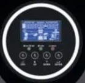

Quyum Nig Ltd
ValueMax Technology Group Limited 12th started in 2011
as a small business in Nigeria. We built websites, designed graphics, and printed for customers. As customers asked for more, we grew. Today we run four businesses, each with its own team: ValueMax Communications, CodersHub, ValueMax Tech Academy, and ValueMax Coworking. ValueMax Technology Group Limited started in 2011 as a small business in Nigeria. We built websites, designed graphics, and printed for customers. As customers asked for more, we grew. Today we run four businesses, each with its own team: ValueMax Communications, CodersHub, ValueMax Tech Academy, and ValueMax Coworking. ValueMax Technology Group Limited started in 2011 as a small business in Nigeria. We built websites, designed graphics, and printed for customers. As customers asked for more, we grew. Today we run four businesses, each with its own team: ValueMax Communications, CodersHub, ValueMax Tech Academy, and ValueMax Coworking.
ValueMax Technology Group Limited started in 2011
as a small business in Nigeria. We built websites, designed graphics, and printed for customers. As customers asked for more, we grew. Today we run four businesses, each with its own team: ValueMax Communications, CodersHub, ValueMax Tech Academy, and ValueMax Coworking. ValueMax Technology Group Limited started in 2011 as a small business in Nigeria. We built websites, designed graphics, and printed for customers. As customers asked for more, we grew. Today we run four businesses, each with its own team: ValueMax Communications, CodersHub, ValueMax Tech Academy, and ValueMax Coworking. ValueMax Technology Group Limited started in 2011 as a small business in Nigeria. We built websites, designed graphics, and printed for customers. As customers asked for more, we grew. Today we run four businesses, each with its own team: ValueMax Communications, CodersHub, ValueMax Tech Academy, and ValueMax Coworking.
search on google
click here to download our curriculum